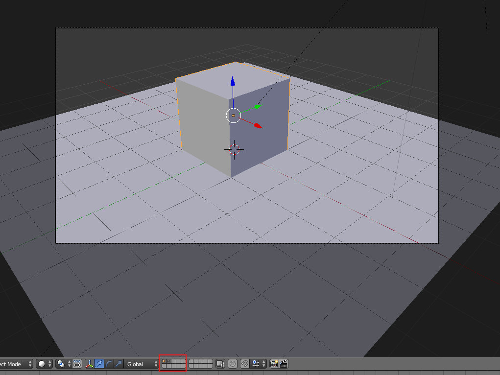
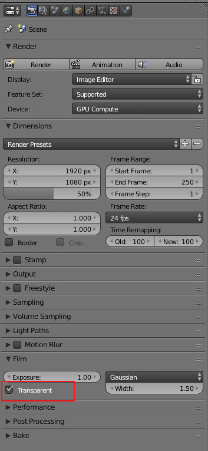
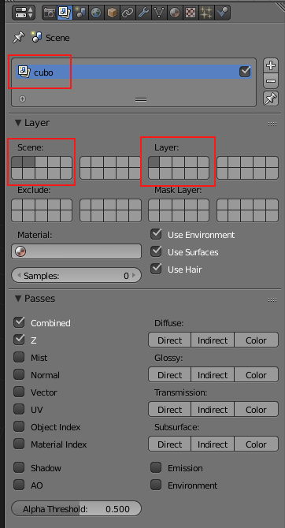
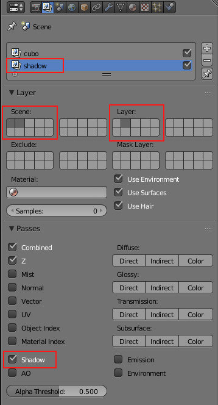
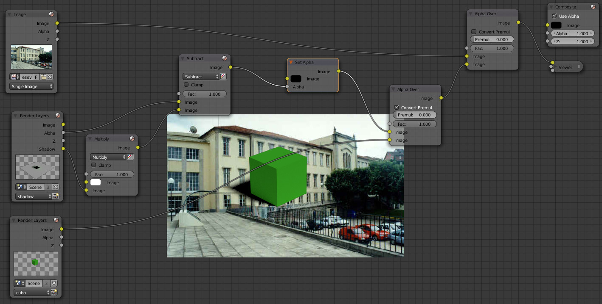

O Blender Internal Render tem uma opção de "Shadows Only" (painel dos materiais) que permite tornar um material transparente com exceção das áreas sobreadas. Esta opção é extremamente útil quando se pretende criar uma sobreposição de imagens (por exemplo: imagem de fundo externa e objeto 3D com sombras por cima).
No Cycles, ainda não existe uma opção tão prática mas é possível obter o mesmo efeito com a Render Pass Shadow.
A nossa cena é composta por 2 objetos. O cubo está na scene layer 1 e o plano está na scene layer 2. Ambas as scene layers estão visíveis e ativas.
No painel de Render, definimos o fundo como transparente para não renderizar o fundo.
No painel de Render Layer, mantenha as duas scene layers ativas mas selecione apenas a layer do cubo. No exemplo abaixo, também modificámos o nome da Render Layer para "cubo". Esta Render Layer só irá renderizar o cubo.
Crie uma segunda Render Layer (no exemplo, demos o nome shadow). Mantenha as duas scene layers ativas mas selecione apenas a layer do plano. Ative ainda a Render Pass Shadow. Esta Render Layer só irá renderizar o plano com a sombra e esta poderá depois ser isolada.
A configuração inicia com 3 nós de input: imagem que irá ficar no fundo (porque vamos usar uma fotografia), renderização da Render Layer shadow e renderização da Render Layer cubo.
O principal trabalho de configuração é feito na Render Layer shadow. O nó Multiply (Color > Mix) irá permitir controlar a intensidade da sombra através do Fac. O nó Subtract (Color > Mix) irá permitir isolar a sobra e o Set Alpha (Converter > Set Alpha) irá definir o que não é sombra como Alpha (transparência). O primeiro nó Alpha Over (Color > Alpha Over) vai permitir sobrepor o cubo à sombra. O segundo irá permitir sobrepor o cubo com sombra à imagem de fundo.
Não se esqueça de ligar o último Alpha Over ao nó Composite!
Nota: a pouca qualidade da sombra deve-se às poucas samples utilizadas na renderização.